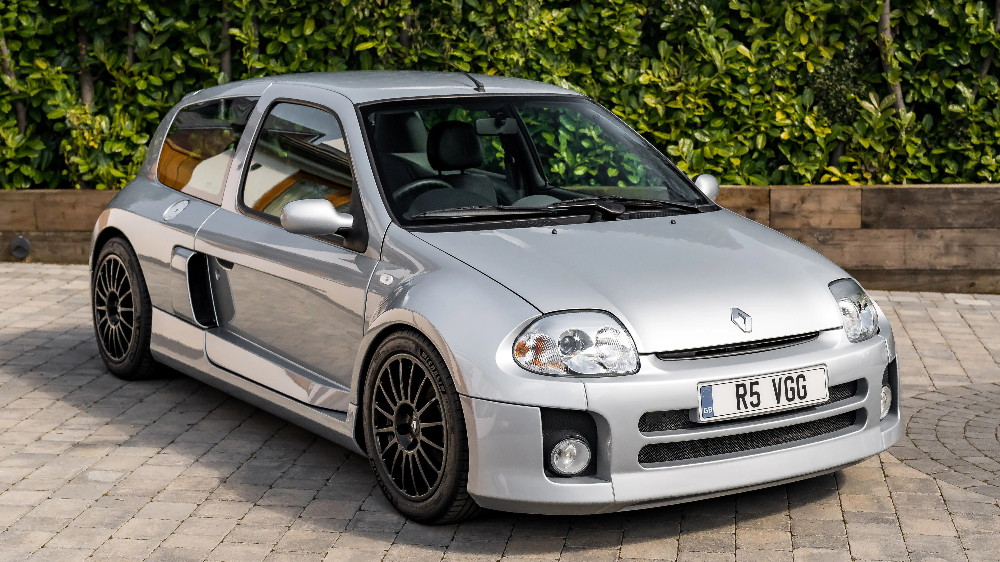
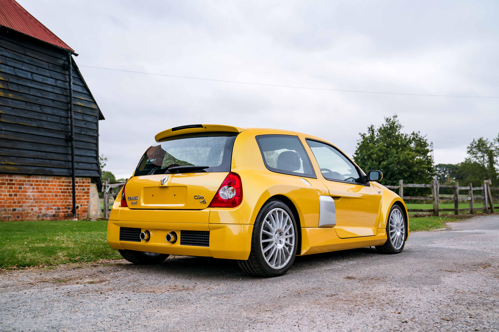
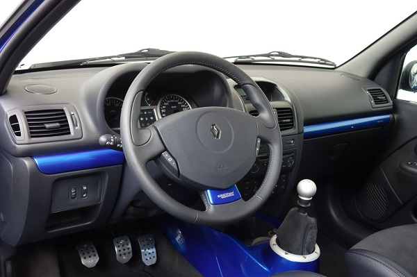
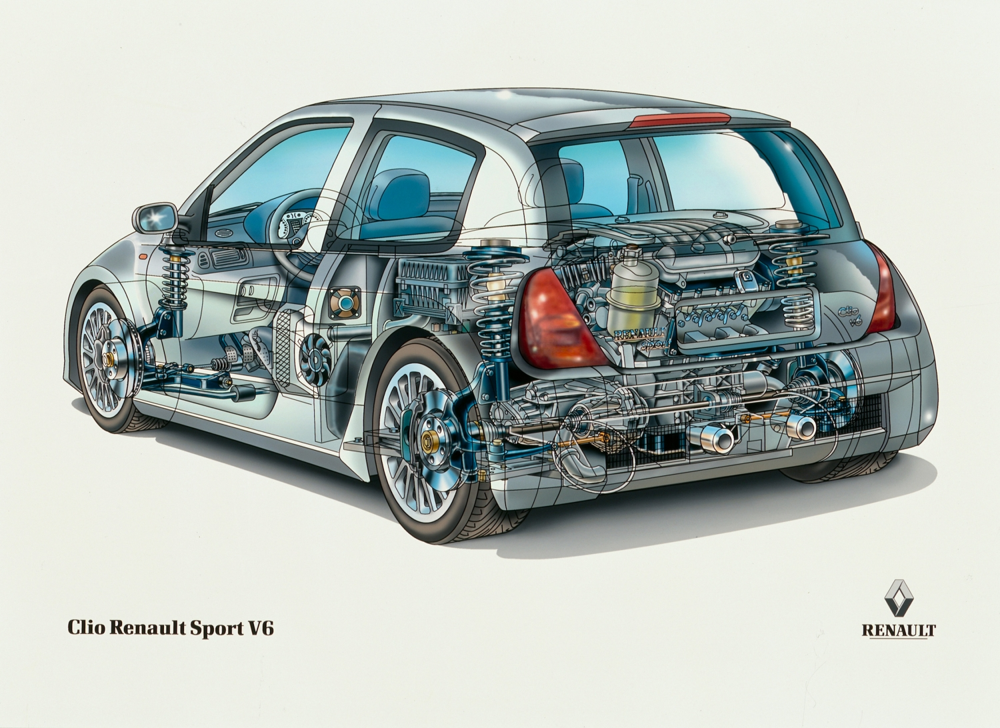

Renault Clio V6
Um hatch pequeno com motor V6 no meio do carro: a "menor supercarro do mundo".

Ficha Rápida
Motor
3.0 V6 24V
Potência
255 cv
Torque
300 Nm
Câmbio
Manual de 6 marchas
Tração
Traseira
0 a 100 km/h
5,8 s
Velocidade máxima
250 km/h
Dados da versão Fase 2 (2003-2005), segundo a Renault Sport. A Fase 1 (2001-2003) tinha 230 cv e fazia o 0 a 100 km/h em 6,4 s. O motor tem 2.946 cc e fica atrás dos bancos (posição central traseira).
História
A marca
A Renault é uma fabricante francesa. Em 1998, no Salão de Paris, ela celebrou seus 100 anos. A Renault Sport é o departamento esportivo da marca e criou o Clio V6.
Como surgiu
O Clio V6 foi mostrado como conceito no Salão de Paris de 1998. A reação do público foi tão boa que a Renault decidiu fazer uma versão de rua em pequena série.
Por que foi criado
Nasceu da copa de corridas Clio V6 Trophy, para dar destaque ao novo Clio. Também era um sucessor espiritual do Renault 5 Turbo, outro carro com motor central.
Fase 1 (2001)
A produção começou em 2001, feita à mão pela TWR, empresa de Tom Walkinshaw, em Uddevalla, na Suécia. Eram 230 cv.
Fase 2 (2003)
Em 2003 a Renault Sport passou a produzir o carro em Dieppe, na França. Veio com 255 cv, chassi reformulado e rodas de 18 polegadas.
5 Curiosidades
1. A menor supercarro
A revista Evo chamou o Clio V6 de "o menor supercarro do mundo".
2. Sem banco traseiro
O lugar dos bancos de trás foi usado para o motor V6. O carro tem só 2 lugares.
3. Quase igual ao conceito
O modelo de série ficou 98% fiel ao conceito mostrado em Paris, em 1998.
4. Versão de corrida
Entre 1999 e 2003 foram feitos 159 Clio V6 Trophy, para a copa de corridas da própria marca.
5. Cores raras
Dos Fase 1 vendidos no Reino Unido, só 25 eram vermelho Mars Red e 8 azul Illiad Blue. A maioria era prata Iceberg.
O Que Torna o Carro Especial?
Motor central
Motor V6 atrás dos bancos e tração traseira, algo raro em um carro desse tamanho.
Motor V6 3.0
V6 de 24 válvulas, aspirado, que chega a 255 cv na Fase 2.
Design
Carroceria larga, com 1.830 mm, e para-lamas bem musculosos.
Raridade
Poucos milhares de unidades, todas montadas à mão.
Herança de competição
Veio das corridas Trophy e seguiu o caminho do Renault 5 Turbo.
Galeria




Fontes
- Renault Sport - Legendary models: Renault Clio V6 (cliocup.fr)
- Carscoops - The Renault Clio Story
- Secret Classics - 20 Years of Renault Sport Clio V6
- Footman James - Clio V6: 20 years since the hottest hot hatch
- Lincolnshire Life - Renault Clio V6
- PistonHeads - anúncio Renault Clio 3.0 V6 Phase 1